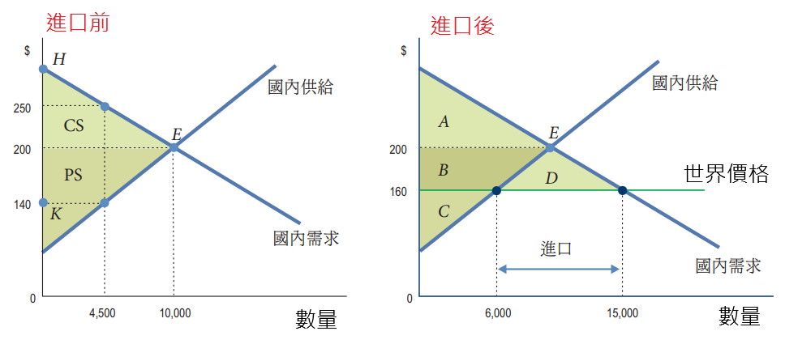
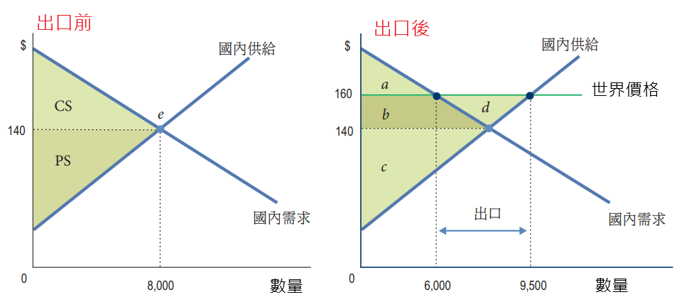
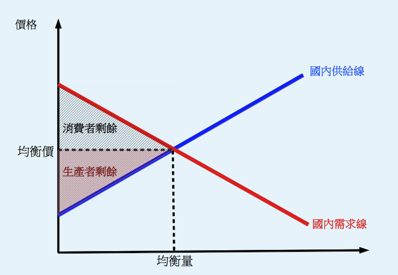
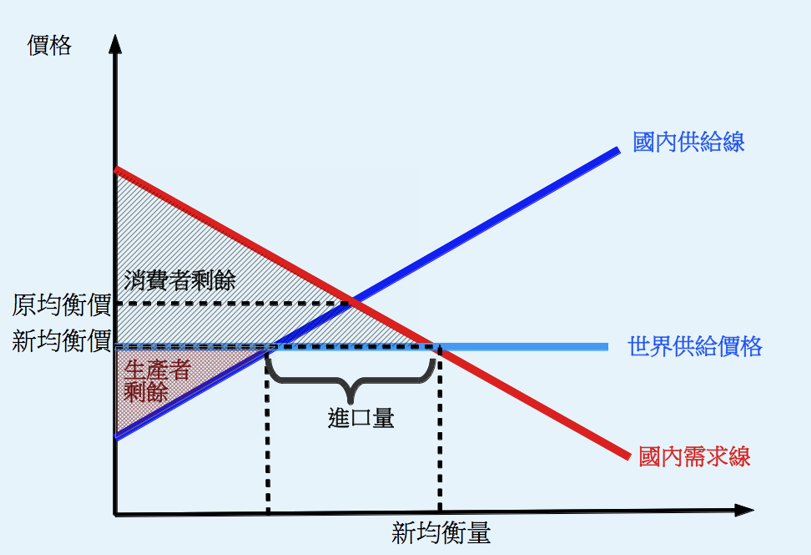
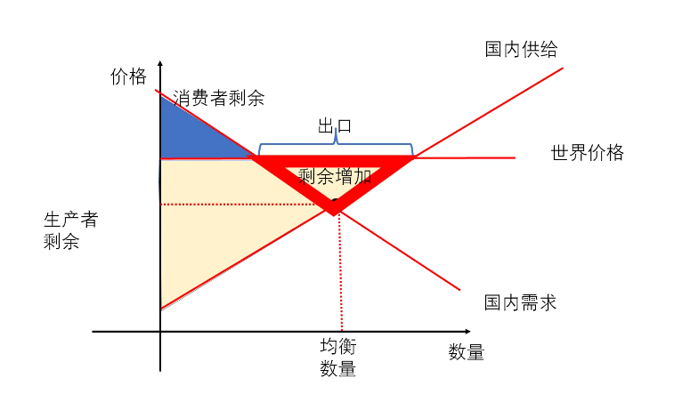
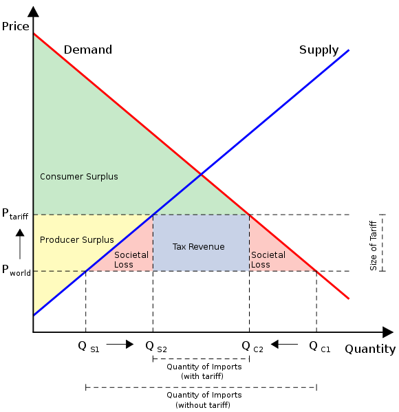
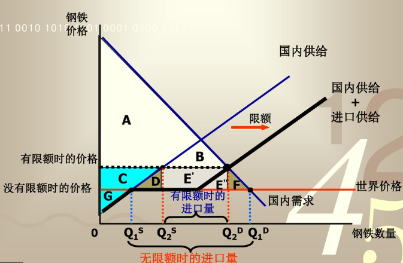

陳杰龍的筆記網站
陳杰龍的筆記網站 主頁
主頁 歸檔
歸檔 分類
分類 其他
其他 關於我
關於我 7.國際貿易
7.國際貿易
筆記說明
此筆記用途在於國立屏東大學資訊管理系大三上經濟學重點整理
並非所有人都適用
如果有侵犯到版權的問題在聯繫我，再聯絡我，我在移除
並非所有人都適用
如果有侵犯到版權的問題在聯繫我，再聯絡我，我在移除
國內市場在開放貿易下如何運作
- 為何美國進口T恤
- 其他國家對T恤的生產具比較利益
進口：購買量-產量 = 15000-6000

- 其他國家對T恤的生產具比較利益
- 為何美國出口飛機
- 美國對飛機的生產具比較利益
出口：產量-購買量 = 9500-6000

- 美國對飛機的生產具比較利益
贏家、輸家與淨貿易利得
- 進口的贏家與輸家
- 消費者剩餘增加，生產者剩餘減少
 
- 消費者剩餘增加，生產者剩餘減少
- 出口的贏家與輸家
- 消費者剩餘減少，生產者剩餘增加

- 消費者剩餘減少，生產者剩餘增加
國際貿易障礙
- 關稅
- 關稅的影響
- 價格上漲
- 購買量減少
- 產量增加
- 進口量減少
- 關稅收入
- 無謂損失
- 關稅下的市場

- 關稅的影響
- 進口限額
- 進口限額的影響
- 無謂損失
- 進口限額下的市場

- 進口限額的影響
- 出口補貼
- 政府對出口商支付的款項
- 造成產量、出口量增加